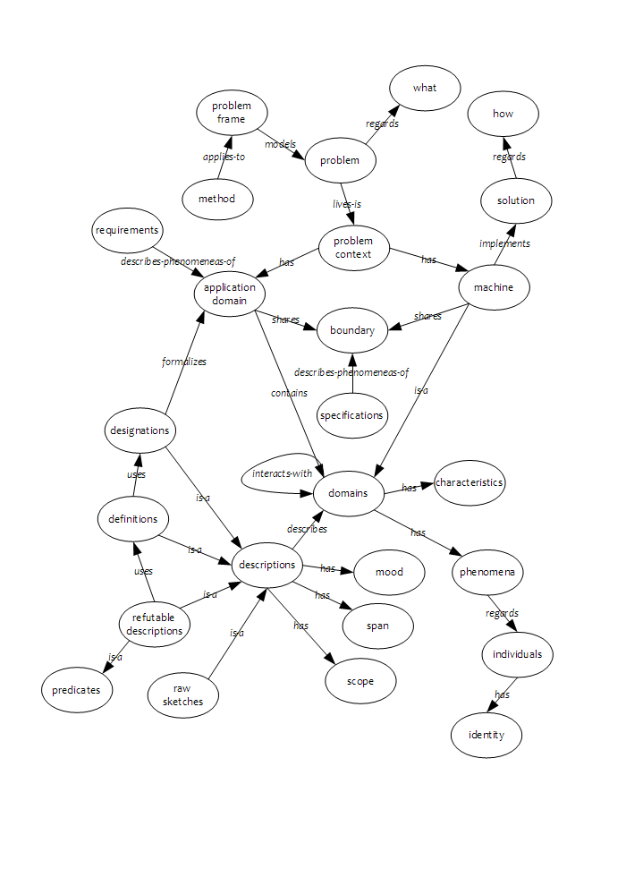

risorse | jackson
Ho da poco riletto questo splendido libro[1]. Essendo strutturato come un'ipertesto, ho tracciato una sorta di mappa per orientarmi meglio tra le varie tematiche presentate:
Esistono diversi tipi di descrizioni, in particolare:
essere-madre-di.Le designations costituiscono una sorta di mappa dell'application domain; è dunque fondamentale che esse catturino gli aspetti caratteristici in modo chiaro e univoco, per consentire la costruzione di descrizioni chiare e incontrovertibili. È altrettanto importante che l'insieme dei phenomena designati sia il più piccolo possibile: le designations devono stabilire un narrow bridge tra il problem context e la sua descrizione. È inutile introdurre una designation per il concetto di Fratello se già sono disponibili quelle per Maschio, Padre e Madre: «Fratello(x,y) ≡ Maschio(x) ∧ (∃p | Padre(p,x) ∧ Padre(p,y)) ∧ (∃m | Madre(m,x) ∧ Madre(m,y))».
Le descrizioni sono caratterizzate da:
I requisiti (requirements) definiscono il problema, asserendo fatti relativi a phenomena dell'application domain; l'implementazione (o program) definisce le modalità operative della macchina, ed è per tale motivo di pertinenza del dominio machine; le specifiche (specifications) definiscono l'interfaccia tra il dominio applicativo e la macchina, e riguardano gli shared phenomena condivisi tra application domain e machine.
In modo più formale:
C, P → S (l'esecuzione del programma P sul computer C soddisfano la specifica S);
D, S → R (le proprietà di dominio D, congiunte con le specifiche S – effetto dell'esecuzione di P su C –, soddisfano i requisiti R).
È interessante soffermarsi sull'esempio citato dall'autore, riguardante un incidente aereo avvenuto a causa del mancato azionamento del sistema di retro-spinta durante un atterraggio in acquaplaning (l'areoplano finì fuori pista); i requisiti erano:
WHEEL-TURNING e MOVING-ON-RUNWAY sono phenomena di application domain, mentre WHEEL-PULSES-ON è uno shared phenomena di application domain e machine.
Le specifiche per l'azionamento della retro-spinta erano:
REVERSE-ENABLED è lo shared phenomena che il sistema utilizza per comunicare al application domain per attivare il sistema di retro-spinta.
L'incidente è stato causato dall'errata interpretazione del dominio del problema, in particolare del secondo requisito, che non cattura la reale condizione di rullaggio: così come specificato infatti, in caso di acquaplaning si deve giungere alla conclusione che dato che le ruote non girano, l'areoplano non si trova sulla pista.
L'analisi va quindi corretta, in primis modificando la specifica in:
quindi individuare un nuovo shared phenomena che possa indicare a machine la condizione di MOVING-ON-RUNWAY, e modificare il programma P in modo da rispettare la nuova specifica.
Le principali fasi dell'analisi comprendono:
Il primo passo che il buon analista deve compiere è quello di scindere il problem context nelle due componenti che lo caratterizzano, ovvero l'application domain, che rappresenta l'ambiente nel quale il sistema in fase di definizione andrà ad operare, e la machine, che rappresenta il sistema vero e proprio. Deve sussistere una netta distinzione tra ciò che è di pertinenza del problema, ovvero cosa il sistema deve fare per risolvere il problema – what – e ciò che invece compete alla macchina, ovvero come il sistema opera per risolvere il problema – how.
In funzione della complessità del dominio applicativo, può essere conveniente procedere ad un partizionamento in sotto-domini, badando di ottenere sotto-domini coesi, cioè relativi a phenomena di natura simile, e fortemente disaccoppiati, cioè con pochi shared phenomena in comune con i sotto-domini connessi.
Organizzare i sotto-domini in strutture gerarchiche è spesso sintomo di eccessiva semplificazione: più aderenti alla realtà sono strutture a grafo, mono- – o più spesso – multi-strato.
Questa fase culmina con la realizzazione del context diagram, un diagramma che rappresenta il problem context come insieme di domini interdipendenti.
Una volta individuati i sotto-domini applicativi, si procede ad un'analisi di massima della loro natura, prendendo in considerazione aspetti quali:
Un importante aspetto da considerare sono le tipologie di interazioni tra domini, in particolare in presenza di latenze o altre inconsistenze che non permettono di individuare uno shared phenomena comune attraverso il quale modellare l'interazione. In questo caso si ricorre a un dominio ausiliario di disaccoppiamento, il connection-domain. Un esempio in tal senso è costituito dall'invio e dalla successiva ricezione di una missiva: i due eventi sono sufficientemente distanti nel tempo da non essere vissuti dal mittente e dal destinatario come due aspetti di un unico evento; in secondo luogo non è nemmeno certo che ad un invio segua una ricezione, per esempio perché la lettera potrebbe venir smarrita. Si introduce allora un connection domain che rappresenta un ufficio postale: l'invio diventa uno shared phenomena tra il dominio del mittente ed il connection domain, mentre la ricezione diventa uno shared phenomena tra il connection domain e il dominio del destinatario
Note le caratteristiche e le dipendenze tra i sotto-domini del problema, si cerca di stabilire una corrispondenza con uno dei problem frame noti, nella speranza di poter mettere in atto le strategie risolutive più adeguate per il tipo di problema. È utile a questo punto tracciare il frame diagram, che è un context diagram arricchito delle relazioni esistenti tra i domini, oltre all'evidenziazione del dominio machine: questo permette di identificare la struttura del problema e consente di valutarne la somiglianza con gli schemi noti.
Per valutare il grado di compatibilità del frame diagram con un problem frame, bisogna tener conto di:
Se è stato individuato un problem frame compatibile, si può procedere alla risoluzione del problema originale applicando il metodo risolutivo – method – associato.
Alcune tra le caratteristiche di un «buon» metodo sono:
Il fluire del tempo è scandito da eventi, separati tra loro da intervalli, ovvero periodi di tempo durante i quali nulla accade (cfr. events and intervals).
L'implementazione non deve inquinare la descrizione del problema, ovvero ci dev'essere una netta distinzione tra ciò che è specification e ciò che è implementazione. La descrizione del problema dovrebbe essere fatta nell'ipotesi di poter disporre di qualunque tecnologia necessaria, reale o immaginaria, così da procrastinare alla fase di implementazione le scelte tecniche.
Pagina modificata il 03/01/2012